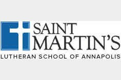
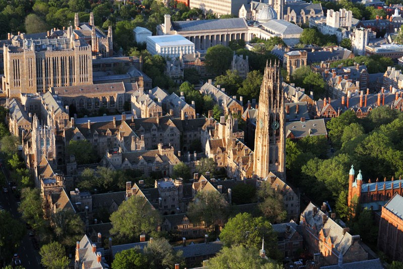
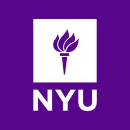
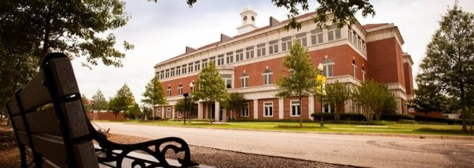

- Program Benefits
- Curriculum Overview
- Camino Real Charter High School
- PLUM Schools district
- St. Martin's Lutheran School of Annapolis
- Birmingham Community Charter High School
-Program Benefits-
- Student partner program that pairs our student up with an American student in a real classroom setting.
- Specialized tours to cities and schools of East Coast.
- Lots of extracurriculums and in school activities.
- Experience lives of Americans first hand in our Homestay program.
-Targeted Students-
- Students age between 8 - 18
- Comfortable in conversations with English speakers
- Has plans to study abroad in America for high school or college.
Blend into American classrooms and study, live, and have fun together with local students. We welcome those who are particularly interested in mathematics, computer science, liberal arts, history, design, arts, and writing.
Our program integrates education institutions across the United States and utilize our rich resources to provide world class education environment and top of the notch teaching team to our students. Students will be taught with elite education while developing independent characters. Students will benefit greatly from these traits in the pursuits of higher education. Every student will receive a certificate of completion at the end of the program.
Primary school curriculums
Middle school curriculums
Speicalized primary school curriculums (Computers, Spanish and Arts)
1. Camino Real Charter High School
Founding Year：1969
School Property：A comprehensive four-year public high school,
formally identified and recognized by the Western Association of Schools and Colleges (WASC)
Grades：9-12 Grade
Students Enrollment: 3700
Location: 20 miles north of Los Angeles in California
School Honors: The California Distinguished School
(Obama met at the White House with the 2010 National Champion)

Science Class
Literature Class
Speech Class
English Class
Math Class
Writing Class
Carpenter，Automobile，Performing Programs
Music Class
Football Class
Basketball Class
Other Courses: The school arranges the special courses of Culture Differences Education and College Tutorials.
Culture Differences Education

University Tutorials
2. PLUM Schools district
PLUM School district position in Pittsburgh, Pennsylvania, PLUM School has been elected for one of the best 6 School district in Pennsylvania. One of the school that is testing out the Federal Government policy of “No children left behind”.
The school district includes six schools, Plum Senior High School (9-12), Oblock Junior High School (7-8), and four Elementary School (K-6): Center Elementary School, Holiday Park Elementary School, Pivik Elementary School, and Regency Park Elementary school.
Plum Senior High School is located on Elicker Road, 900, with 1,782 students. The school has 101 teachers, according to a report by Pennsylvania Board of Education, all teachers of Plum Senior High School has been titled “Highly Qualified”. < Pittsburgh Business Times> ranked the school as the 46th in America East High School, and ranked 43rd on PSSAs.
3. St. Martin's Lutheran School of Annapolis
St. Martin's Lutheran School of Annapolis is established in 1963, and grew from daycare to a school educating children from age of 3 to 8th grade over the 50 years, provided high quality of education for the children in Annapolis Community.
Even though St. Martin's Lutheran School of Annapolis is small in scale, they have many excellent educators, provided high quality of education and help to the student in getting into a good Senior High School.
St. Martin's Lutheran School of Annapolis is very close to Washington DC, Chesapeake Bay, Baltimore, and Ocean City.
Course：Math, Science, English, Social Science, Spanish, Art, Music, Physical Education.
Physical Activities: soccer, basketball
Student Societies and Clubs: Chorus, music, nature and outdoor clubs, robotics groups, volunteer activities and more.
4. Birmingham Community Charter High School
Birmingham Community Charter High School is found in 1953, ranked fourth in Charter school of Los Angeles Unified School District, the largest School District in America.
Birmingham Community Charter High School became a Charter school in 2009, and is a school of Los Angeles Unified School District, the largest School District in America, the High School has about 4000 students, with a University enrollment rate of 80%.
Birmingham Community Charter High School has many outstanding art classes and projects.
At the same time, it is also the film base for many music shows, advertisements, and tv shows, for example, Can not keep my hands off you, Missy Elliott’s song Gossip Folks, and many other songs, a unit of the tv show America’s Next Top Model was also filmed at the school in 2007. The soccer field once filmed the movie Everything is Magic. Movie such as Like father like son was also taken place there. The best dancing group also rehearsed at the school before they started their tour.
Dancing Crazy was also filmed at the school.
Birmingham Community Charter High School also has decent performance in basketball, male soccer and hockey.
Wrestling team achieved first place in Los Angeles area on 2013.
Both male and female Motocross team achieved first place in Los Angeles on 2010.
Birmingham Community Charter High School has many alumni that are famous actors and artists.
Famous actor and director Sally Field also graduated from this school.
Homestay Program, experience the lives of Americans
Homestay programs are designed to improve students' ability in English and learn about foreign cultures and traditions. Where students are sent to a school, away from the environment that they are so used to. Homestay programs are the best choices for students who prefer a secure enviroment and a home-like social setting. As parents, having your children staying in a local American home give you a peace of mind because the host family will take care of everything while ensuring that the students have the freedom, love, and fun. Most of the students end up making lifelong friends with their host families.
- An English speaking family
- A private room
- A comfortable bed
- Furnitures that will support the needs of students
- Two meals during weekdays and three during weekends (weekday lunches are provided by schools)
- A bathroom
- Internet Access
- Arranged pickups from school and home
1. 哈佛大学Harvard University
哈佛大学（Harvard University），简称哈佛，坐落于美国马萨诸塞州剑桥市，是一所享誉世界的私立研究型大学，是著名的常春藤盟校成员。这里走出了8位美利坚合众国总统，133位诺贝尔奖得主（世界第一） 、18位菲尔兹奖得主（世界第一） 、13位图灵奖得主（世界第四）曾在此工作或学习，其在文学、医学、法学、商学等多个领域拥有崇高的学术地位及广泛的影响力，被公认为是当今世界最顶尖的高等教育机构之一。
哈佛同时也是美国本土历史最悠久的高等学府，其诞生于1636年，最早由马萨诸塞州殖民地立法机关创建，初名新市民学院，是为了纪念在成立初期给予学院慷慨支持的约翰·哈佛牧师。学校于1639年3月更名为哈佛学院。1780年，哈佛学院正式改称哈佛大学。截止2017年，学校有本科生6700余人，硕士及博士研究生15250余人。
2017-18年，哈佛大学位列世界大学学术排名（ARWU）世界第一、usnews世界大学排名世界第一、QS世界大学排名世界第三、泰晤士高等教育世界大学排名世界第六。2017年6月，《泰晤士高等教育》公布世界大学声誉排名，哈佛大学排名世界第一。
截至2014年，哈佛大学在校全体教员约2400人，其中含有多位诺贝尔奖、普利策、普利兹克奖、菲尔兹奖获得者；学校拥有美国国家科学院（NAS)、美国国家工程院（NAE）、美国国家医学院（IOM）三院院士300余人，其中国家科学院院士及国家医学院院士居于全美首位。
优势学科
哈佛大学在生命科学、自然科学、法学、医学、商学、社会科学等多个学科领域拥有世界级的学术影响力。

杰出人才
哈佛大学共出过8位美国总统和数十位诺贝尔、普利策奖获得者。此外，还培养了一大批知名的学术创始人、世界级的学术带头人、文学家、思想家，如诺伯特·德纳、拉尔夫·爱默生、亨利·梭罗、亨利·詹姆斯、查尔斯·皮尔士、罗伯特·弗罗斯特、威廉·詹姆斯、杰罗姆·布鲁纳、乔治·梅奥等；著名外交家、美国前国务卿亨利·基辛格、蒙古国现任总统查希亚·额勒贝格道尔吉也出自哈佛。
近代以来，中国也有许多科学家、作家、学者曾就读于哈佛大学，如胡刚复、竺可桢、杨杏佛、赵元任、陈寅恪、林语堂、梁实秋、梁思成、江泽涵、胡秀英、余英时、李欧梵等。
而马克·扎克伯格和比尔·盖茨则是该校久负盛名的辍学生。
2. 麻省理工大学MIT
麻省理工学院（Massachusetts Institute of Technology），简称麻省理工（MIT），坐落于美国马萨诸塞州剑桥市（大波士顿地区），是世界著名私立研究型大学。麻省理工学院创立于1861年，在第二次世界大战后，麻省理工学院借由美国国防科技研究需要而迅速崛起；在二战和冷战期间，麻省理工学院的研究人员对计算机、雷达以及惯性导航系统等科技发展作出了重要贡献。
麻省理工学院素以顶尖的工程学和计算机科学而著名，拥有林肯实验室（MIT Lincoln Lab）和麻省理工学院媒体实验室（MIT Media Lab），位列2016-17年世界大学学术排名（ARWU）工程学世界第一、计算机科学第二，与斯坦福大学、加州大学伯克利分校一同被称为工程科技界的学术领袖。截止至2017年，麻省理工学院的校友、教职工及研究人员中，共产生了88位诺贝尔奖得主（世界第6）、6位菲尔兹奖得主（世界第10）以及21位图灵奖得主（世界第2） 。
在对未来社会、科学和大学自身研究的基础上，MIT制定了未来的发展战略：
- 吸引最优秀的学生和教师，给他们提供有刺激性的和有效的生活与学习环境。
- 致力于研究基础科学，但应在把研究、学习和行动整合成一体的新模式中处于领先地位
- 致力于学术、探究和批判精神，并擅长把工业、政府和学术界联合起来，共同探索、解决世界面临的主要问题。
- 继续保证艺术、人文学科和社会科学方面的强大计划。
- 致力于扩大技术上和管理上的能力，但要考虑到道德和伦理问题。
- 把服务于国家作为首要的和最重要的原则，但要认识到这需要全球性的参与、合作与竞争。
- 开拓新的财政来源，增加公民、联邦政府和商业界对科学、技术、研究和高等教育的理解与支持，吸引私人投资的增加。
2017-18年度，MIT位列QS世界大学排名世界第一、usnews世界大学排名（US News）世界第二、世界大学学术排名（ARWU）世界第四、泰晤士高等教育世界大学排名世界第五。2017年6月，《泰晤士高等教育》公布世界大学声誉排名，麻省理工学院排名世界第二、仅次于哈佛大学。
总体声誉
波士顿是世界著名的大学城， 大波士顿地区名校众多，麻省理工学院是这些大学中的佼佼者，尤其在工程技术方面的排名时常位列世界第一。麻省理工学院不仅综合实力稳居世界前列，还研发高科技武器，并且拥有美国最高机密的林肯实验室、领先世界一流的计算机科学及人工智能实验室、汇集世界各类顶尖科技的麻省理工学院媒体实验室。麻省理工斯隆管理学院在管理界赫赫有名，培养了许多全球顶尖首席执行官。虽然MIT不是常春藤盟校成员，但基于其在学术领域的领先地位，MIT也常被纳入常春藤编外成员（Ivy Plus）。
麻省理工学院与哈佛大学、斯坦福大学与加州大学伯克利分校并称为“美国社会不朽的学术脊梁”。截止2017年，先后有88位诺贝尔奖得主曾在麻省理工学院学习或工作，在全球和全美高校中分别列第六名和第五名；先后有21位图灵奖得主在MIT工作或学习过，仅次于伯克利（23位）位列世界第二。另有6位菲尔兹奖（世界数学最高奖）得主曾在MIT工作、位列世界第十。截止2016年， 在MIT现役教授中共有79位美国国家科学院院士（以及47位退休教授）、57位美国国家工程院院士（以及59位退休教授）。
3. 耶鲁大学 Yale University
耶鲁大学（Yale University），简称“耶鲁（Yale）”，是一所坐落于美国康涅狄格州纽黑文的世界著名私立研究型大学，最初由康涅狄格州公理会教友于1701年创立，1716年迁至康涅狄格州的纽黑文（New Haven）。
耶鲁大学是美国东北部老牌名校联盟“常青藤联盟（Ivy League）”的成员，也是八所常春藤盟校中最重视本科教育的大学之一。作为美国最具影响力的私立大学之一，耶鲁大学是美国历史上建立的第三所大学，其本科学院与哈佛大学、普林斯顿大学本科生院齐名，历年来共同角逐美国大学本科生院美国前三名的位置，位列2016-17年US News美国大学本科排名第3（与芝加哥大学并列）。耶鲁大学共走出了5位美国总统、19位美国最高法院大法官、16位亿万富翁等等。
耶鲁大学的教授阵容、课程安排、教学设施方面堪称世界一流。截至2017年，耶鲁大学的教授和校友获得了58个诺贝尔奖（排名世界第10）和5个菲尔兹奖（排名世界第12）。耶鲁大学图书馆拥有1500万册藏书，在美国大学图书馆系统中排名第二。耶鲁校园的260座建筑物涵盖了各个历史时期的设计风格，曾被一名建筑评论师誉为“美国最美丽的城市校园”。2017-18年度，耶鲁大学位列世界大学学术排名世界第11名、泰晤士高等教育世界大学排名世界第12名、usnews世界大学排名（US News）排名第10、QS世界大学排名世界第15名。
1718年，英国东印度公司高层官员伊莱休·耶鲁先生向这所教会学校捐赠了9捆总价值562英镑12先令的货物、417本书以及英王乔治一世的肖像和纹章，在当时对襁褓之中的耶鲁简直是雪中送炭。为了感谢耶鲁先生的捐赠，学校正式更名为“耶鲁学院”，它就是今日耶鲁大学的前身。18世纪30年代至80年代，耶鲁在伯克利主教、斯泰尔斯牧师、波特校长等的不懈努力下，逐渐由学院发展为大学。至20世纪初，随着美国教育的迅猛发展，耶鲁大学已经发展到了惊人的规模，在世界的影响力也达到了新的高度。
在耶鲁大学众多的学术精英中，有13位学者曾荣获诺贝尔奖。经济学家嘉林·库普曼斯，著有数理经济理论方面的著作，探讨了经济发挥最佳作用的条件；细胞生物学家乔治·柏拉德，研制成组织制备法，发现了几种细胞结构；化学家拉斯·昂萨格，提出了不可逆化学过程理论；物理学家默里·盖尔曼，完整地提出了关于亚原 子粒子的理论知识；作家辛克莱·刘易斯，重要作品有《大街》、《巴比特》、《阿罗史密斯》、《埃尔默·甘特里》等；微生物学家约翰·恩德斯，成功地在非神 经组织的培养物上培养脊髓灰质炎病毒；物理学家欧内斯特·劳伦斯，发明了第一台高能粒子加速器枣回旋加速器；生理学家迪金森·理查兹，改进并使用心导管技 术；遗传学家乔舒亚·莱德伯格，发现了细菌遗传物质的组织和重组机制；生物化学家爱德华·塔特姆，研究出遗传突变影响了某些细菌、酵母和霉菌的营养要求方 式；物理学家小威利斯·兰姆，通过实验使量子电动力学更为准确；微生物学家马克斯·泰累尔，对黄热病的成功研究；生物学家悉尼·奥尔特曼，证明核糖酸能对细胞的化学反应起催化作用。
5. 沃顿商学院 Wharton
宾夕法尼亚大学沃顿商学院位于费城，是世界最著名的商学院之一。沃顿商学院创立于1881年，是美国第一所大学商学院。学校的使命就是通过总结培养领导人才来促进世界的发展。 沃顿在商业实践的各个领域有着深远的影响，包括全球策略，金融，风险和保险，卫生保健，法律与道德，不动产和公共政策等。它的商业教育模式是在教学，研究，出版和服务中处处强调领导能力，企业家精神，创新能力。
学院不仅在培养未来的商界精英，同时致力于为商界提供深入研究。并且它是世界最顶尖的商业知识创新机构。为实现这个目标就需要用精通于跨学科方法从事研究和紧密联系商界。沃顿18个研究中心就起到了这样的作用，这些研究中心包括：领导力和应变管理，创业管理，电子商务和商业改革等。这些研究中心让教授，学生以及工商界成员共同研究和分析商务问题。 世界第一商学院的故事始自美国费城企业家约瑟夫沃顿（Joseph Wharton），他出生于一个19世纪费城富有的商业家庭，通过经营伯利恒钢铁公司和美国镍公司积累了一笔可观的财富。在1881年他55岁时，由于没有儿子沿承他的家族姓氏和经商智慧，便用其资产的一部分捐给宾州大学建立了沃顿商学院。他的初衷是培养那些继承了前辈财富的年轻人成为国家新的商业领袖。自沃顿建校之后，两任主任和11任院长打造了沃顿严谨、务实、创新、进取的校风。
自1881年建校之后，沃顿又创造了许多欧美商学院的第一：1881－1910沃顿出版了第一本商业教科书; 1921创立了第一个商学院工业研究中心，并与同年设立了MBA学位；1970设立了第一个卫生健康管理MBA学位；1973建立了第一个中小企业创业中心；1978 设立了第一个管理和科学技术双学位。 沃顿现共有本科生，MBA,EMBA以及博士生近4600名。共有250名全职和兼职教员，11个院系。每年沃顿要为8000多名参与者开设高级管理人员培训课程。国内外主要的商业出版物将沃顿商学院连续几年评为世界最佳商学院之一。 宾夕法尼亚大学共有4个本科生院和12个研究生院。它位于宾夕法尼亚州的费城。宾大作为8个享有威名的常春藤学院之一，成立于1740年，他的创始人是本杰明.弗兰克林和费城的贵格会教徒，是全美第一个非宗教大学。
伴随对研究的重视，沃顿长期以来形成了一个全球化的观念。在过去的几年里，沃顿首创了很多全新的国际性商务课程。它创立了Joseph H. Lauder管理和外语学院，并开设了第一个商学院工商管理和硕士双学位课程。他创立了国际论坛，这是最早的高级经理人全球课程之一，以及第一个完整的本科国际工商课程——Huntsman国际研究和商务课程。
此外，沃顿还和INSEAD结成联盟，共同给研究生和高级管理人才开设高质量的商务课程，这些课程在全球的四个地方进行：沃顿美国费城校区和旧金山校区，INSEAD在法国的枫丹白露以及新加坡校区。沃顿旧金山校区，即沃顿西校，是为了方便美国西部的学生，校友和雇主而专门创建的。从2001年初秋开始，学院将开设高级管理人员培训课程，MBA课程，提供实习，管理人员再培训课程以及教职员的研究项目。
沃顿提出很多全球化的建议，包括在亚洲，欧洲，拉丁美洲建立执行董事会，这由来自28个国家的80多名高级管理人组成，并帮助在印度和新加坡建立了商学院。
全球认可的领先商学院
来自各权威媒体的商学院评比结果显示：美国《商业周刊》(全美最有影响的商学院排名榜发布媒体，每两年发布一次商学院排名)
2004年: 全美最佳商学院排行榜中名列第一
2000年: 全美最佳商学院排行榜中名列第一
1998年: 全美最佳商学院排行榜中名列第一
1996年: 全美最佳商学院排行榜中名列第一
英国《金融时报》
2005年: 全球最佳商学院排行榜中名列第一
2004年: 全球最佳商学院排行榜中名列第一
2003年: 全球最佳商学院排行榜中名列第一
2002年: 全球最佳商学院排行榜中名列第一
美国《华尔街日报》 (美国最大财经金融类报纸)
“宾夕法尼亚大学沃顿商学院被选为最佳商学院”
——2004年3月发布的全球商学院排行榜
具有创新精神和前瞻性的沃顿：“沃顿的第一”；第一所专业管理学院 当约瑟·沃顿在1881年建立世界上第一个管理学院时,他坚信未来的商业领导者需要一个全面的富有生机的教育，这种理念已经改变了20世纪公司和团队领导的方式；;第一个完整供企业家学习的MBA课程
经过一个世纪的创新,沃顿已经能为学生们提供世界上最先进和最现代化的MBA教育。;第一所管理和外语双专业学院;第一个商学院工商管理和硕士双学位课程;第一个国际论坛——最早的高级经理人全球课程之一；;第一个完整的本科国际工商课程—— Huntsman国际研究和商务课程。 至2013年，以上的这些创新都为世界各个商学院所效仿及推广，成为一种教育方式的潮流。所以说沃顿商学院是全球MBA教学教育的领跑者！
纽约大学NYU
纽约大学（New York University）简称“NYU”，是一所位于纽约的世界著名私立综合性研究型大学，成立于1831年。纽约大学由18个学院和研究所组成，已经成为全美国境内规模最大的私立非营利高等教育机构之一，同时也是美国唯一一座位于纽约心脏地带的私立名校 作为全美TOP 30名校，纽约大学被列为25所新常春藤名校之一，同时也是美国大学协会（AAU）成员之一。截至2016年，该校共拥有36位诺贝尔奖得主（在全球高校中列第17位，居全美第11位）超过30名普利策奖得主，30余名奥斯卡金像奖得主，19名美国科学院勋章得主，多名阿贝尔奖，艾美奖、托尼奖得主。在最新一期出版的2018USNEWS中，纽约大学全美综合排名第30位。2017CWUR 世界大学排名第22位 ，年度全球CEO母校排名第18位全美著名校友总数排名第8位。
纽约大学较为偏重人文及社会科学，研究生院享有极高声誉。属下的帝势艺术学院(Tisch School of the Arts）是全美最佳艺术学院之一；斯特恩商学院（Leonard N. Stern School of Business）是蜚声世界的著名商学院，金融等专业连续排名全美前三；柯朗数学科学研究所是美国排名第一的应用数学研究机构；沙克房地产研究所（Schack）是美国房地产业界著名的高水平研究机构，和世界金融地产界联系紧密，2017排名全美第四。法学院为全美最好的6所法学院之一，这六所顶级法学院也被称为“T6”超级法学院。牙医学院享誉世界，2017泰晤士报世界大学排名第十，全美第二
纽约是世界名城，曼哈顿是纽约的精华所在。华尔街，联合国总部，自由女神像，大都会博物馆，时代广场，中央公园，第五大道，洛克菲勒中心，百老汇剧院区，唐人街均云集于此。市内近300家剧场电影院及200家图书馆及著名的哥伦比亚大学，朱利亚音乐学院等学府争相辉映。纽大位于市中心的华盛顿广场与格林尼治村，是全球艺术交流互动的重镇之一。只要从紫罗兰/白色有山猫吉祥物的校旗上就能分辨出纽大的校区。华盛顿广场，格林尼治村曾是马克·吐温（Mark Twain），爱伦·坡（Edgar Allan Poe）等著名作家和诗人的居住处，而附近的人文景色都被生动地描绘于他们的作品之中。纽约大学的教授和学生12500人被安排在广场附近的21幢宿舍中居住，学生可乘坐大学的巴士到校园就读。
学校特色
纽约大学的特色是偏重理论与实务结合。旨在培养学生除了严格的学术训练之外，更能将所学所长应用于未来的生涯中，以面临社会的激烈竞争及挑战。当初见效的精神既是提供更高深的学问去激发个人在商学，科学，艺术及至于法律的潜力，并同时兼容理论与应用并重的理念。这一观念之所以能够被彻底实践，其原因是由于纽约大学地处全世界文化及金融中心--纽约市，使纽约市大部分的资源均能被学校所用。如博物馆，画廊，音乐厅等，提供了学生们实地去印证所学，更值得一提的是纽约市也提供了许多实习及工作的机会，让大多数的学生在学习生涯中，可以得到宝贵的工作经验，发挥学以致用的精神。例如电影，电视科的学生有机会去电台实习，旅馆管理的同学可以到旅馆去实习，而主修社会工作的学生，更有机会去帮助社会上的老人或患有精神疾病的患者，及日益严重关于homeless的社会问题。这优厚的条件是其它一般大学城学校所不能向背的，也为纽约大学学生在日后谋职或就业生涯铺上了平坦的前景。
阿肯色理工大学 ATU
美国阿肯色理工大学位于美国阿肯色州，建立于1909年，是美国著名的百年公立大学，连续多年被评为美国区域性最优良大学。阿肯色理工大学校风严谨，培养了美国各界无数英才，该校教授大多出自美国名校。阿肯色理工大学现有25个科系，颁发60多个学士、硕士学位。目前在校学生6000余人。 美国阿肯色理工大学（Arkansas Tech University）是美国与中国教育部承认的著名公立大学。位于美国阿肯色州Russellville市，民风淳朴友善、治安良好、四季分明，并且美国本土文化气息浓厚。
在Russellville市居住着25,000人，整个城市平静而美丽，距离州府小石城Little Rock仅一小时的车程。在这里，有森林覆盖的山脉、潺潺流水的小溪和河流，适合于郊游、钓鱼、水上运动等。 美国阿肯色理工大学成立于1909年，创校至今有将近百年的历史，校风优良，培养了美国各界无数英才。学校教授大多出自美国名校，不仅教学经验丰富，教学态度更是专业严谨。
美国阿肯色理工大学设有七所大型学院，大约有25个科系，颁发60多个学士和硕士学位，目前有学生将近6,000多人。校园占地517英亩，有60多栋建筑物，图书馆不仅藏书丰富，而且具有现代化的个人研究室、视听室和宽频校园网络，校园内的体育馆有室内游泳池、壁球场、篮球场和健身房等。
学校精心安排了一系列活动，让留学生除了学习美国文化之外，更能够从多元化文化的互动中与不同文化背景的留学生建立良好的友谊，并了解到不同的文化和习俗等。同时，各种学生组织也是一个结交朋友、培养兴趣和开发潜能的好去处。
学校体育部致力于为学生提供能够展示他们运动才能的舞台，男子部（又名非常男孩）提供棒球、篮球、足球和高尔夫等运动项目，2004年学校男子高尔夫球队获得了GSC比赛的高尔夫冠军；女子部（又名金色阳光）提供篮球、越野、网球、排球、高尔夫和垒球等，2003年学校女子篮球队获得了GSC比赛的篮球冠军，并于2004年学校女子网球队获得GSC比赛的网球冠军。 学校对能够成为Russellville市的成员之一而感到非常骄傲，并经常组织学生到社区对需要帮助的人群提供服务
美国阿肯色理工大学是美国教育部认可的最优良大学之一；美国阿肯色理工大学是中国教育部认可的美国著名大学之一；美国阿肯色理工大学是中国驻美国休斯敦领事馆认证的大学之一； NCA (美国教育部区域性认可联盟/North Central Association of Colleges and Schools) 认可之大学；连续多年被US News and World Report杂志评选为美国区域性最优良的大学之一。
学校特色
- 学习环境好，民风淳朴，风景优美，是全美历史上最安全大学之一。
- 该校所在的罗索维尔城市是禁酒城市，学生不可以在公寓喝酒。该校对高中毕业的学生要求必须住校，直到他们21岁或者修满60个学分。
- 该校课程得到美国20多个机构的认证，其中商学院认证AACSB和哈佛认证一样，全球只有12%的大学才有此认证，中国只有北京大学才有。电子工程学位就业率100%。毕业后拥有3年留美工作时间，可以直接申请美国绿卡。
- 该校于1997年开设的“应急处理（EAM）课程”是目前全美甚至全球学术机构唯一获得美国灾害、应急处理与国土保安高等教育部认可，并授予学士学位的课程。
- 最放心的留学途径： 家长可通过阿肯色理工大学中国办事处随时了解学生在美国的情况；学生可以随时向美国或中国工作人员寻求帮助。
- 除春秋季两学期外，学生还可自由选修两个夏季课程，可大大减短了本科时间及减少费用。
课程特色
由美国联邦政府应急应变处理中心[FEMA] 赞助与合作，并由美国国土安全部协助的应急处理对策技术与管理专业，其课程内容旨在培养学生具有本质学能、化学、医疗、生物、消防、执法、紧急医疗服务和紧急应变服务等知识，并具备提供现场紧急应变措施及协助特殊单位如红十字会以及其他特殊重大应变处理部门的能力，为今后能够胜任在政府应急处理部门和大型组织系统的工作奠定坚实的基础。应急处理对策技术与管理专业具有较强的实践性，本专业计划内配备一定的实习课程，协助训练和培养专业人员寻求处理紧急事故和重大灾难程序中所需要的应变能力和组织管理能力等。
中国是一个人口密度大和人口密集型的国家，传染病等自然灾害极易发生；所以在中国的一些大型企业，尤其易发生灾难的企业如矿山、交通、化工等行业都需要这一领域的专业人才，具备应急处理、灾难预防和对策技术研究等能力。
加州州立大学 CSU
加利福尼亚州立大学(简称：加州州立大学，英文：California State University，缩写CSU或Cal State)是美国加州的一个公立大学系统。它是组成加州公立高等教育体系的三个大学系统之一，另外两部分分别是加利福尼亚大学系统（UC系统，10个校区）和加州社区大学系统（123所）。加州州立大学是全美规模最大的公立大学。
与科研型大学加州大学（UC）不同的是，加州州立大学（CSU）是教学型大学。这两所大学都没有所谓“主校区”的概念，每个分校都有自己独立的教学、招生、财政、管理体系。
在加州高等教育总规划（California Master Plan for Higher Education）中，加州州立大学系统于1960年组建。加州州立大学共有23个校区，分布在加州各地。截至2016年秋季学期，学生总数约47.8万人（包括42.3万本科学生和5.5万硕士和博士）；教职员总数约4.7万人。加州约52%的教师资格证，47%的工程人才，28%的IT人才，50%的商业人才出自加州州立大学。学校每年有约10万毕业生，加州每年一半的大学毕业生及三分之一的硕士毕业生，出自加州州立大学系统。
加州州立大学创造和带动了约15万个工作岗位，每年相关支出约170亿美元。
Primary school program curriculums 1

Primary school program curriculums 2

Primary school regular curriculums
Middle school program curriculums

Middle school regular curriculums
High school program curriculums
Program Benefits
Intensive English courses, good for students from primary school to high school.

Participate in a variety of summer camps, activities and enriched curriculums. We offer Math, English, Social Studies, Technology, Public Speaking and Intensive Writing courses. We also offer a variety of liberal arts curriculum such as Music, Arts, Physics and Chemistry. While the students experience a world class hoslistic education, we also train them on leadership, organization skills and intensive English courses. Students will get the first hand practical experience in an American education while developing new concepts of teamwork and social skills. Noblefun designs and organizes summer camp activities accoding to the demands and needs of our students, we work hard to make sure that every student walks away with valuable lessons and a fun time.
For more information, please visit the links above to learn more about the public school curriculums our partner schools offer.
Visit Ivy League Universities and other prestigious universities of different states:
Harvard, Yale, MIT, Columbia in-depth tours, experience the prestige and feel the pride of Ivy Leagues!
Famous attractions tour, learn the history, study the legends and travel across the United States.
Come on! Contact us to inquire about our latest program information!